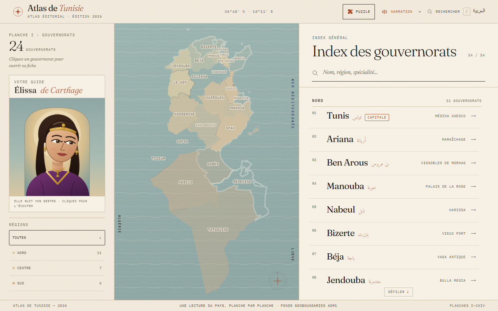
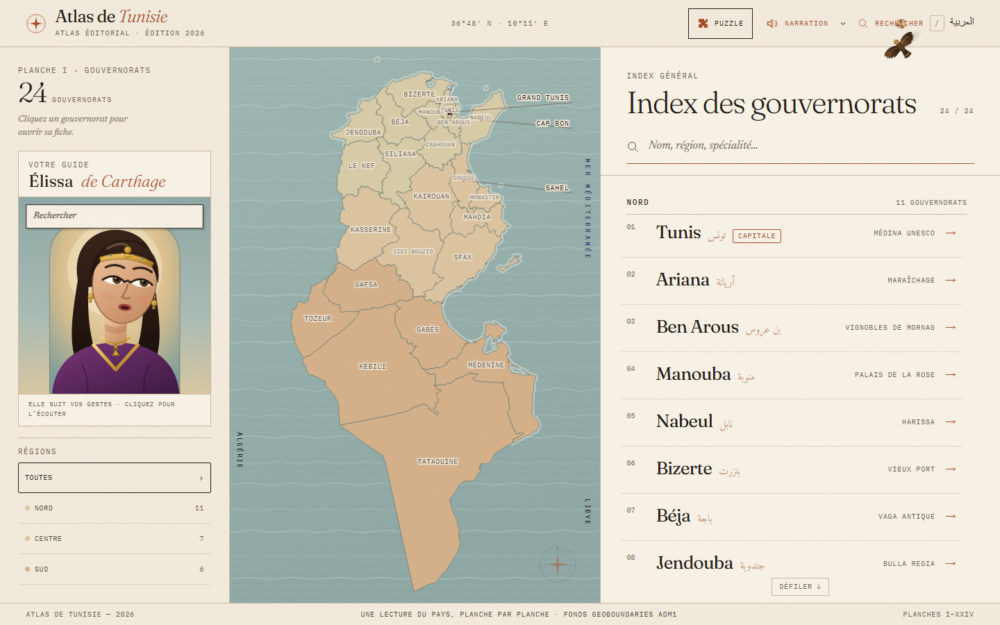
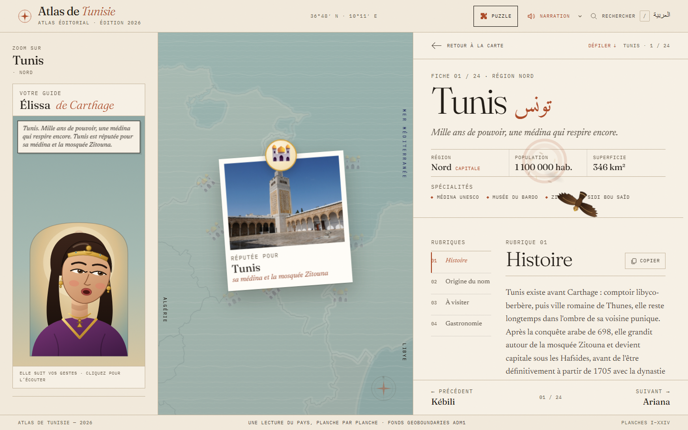

Conception, arborescence et prototypage d’un atlas interactif des 24 gouvernorats.
Livrable PDF
Atlas de Tunisie transforme la découverte géographique en une lecture visuelle, progressive et ludique du pays.
Les informations sur les gouvernorats sont souvent dispersées et présentées sous forme de listes peu mémorables.
Une carte interactive sert de point d’entrée. Chaque gouvernorat ouvre une fiche éditoriale avec repères, histoire, galerie et informations pratiques.
| Entrée | Expérience | Résultat attendu |
|---|---|---|
| Carte de Tunisie | Sélection d’un gouvernorat, zoom et emblème | Accéder rapidement à une fiche contextualisée |
| Index / recherche | Filtre texte et filtres par région | Retrouver une destination sans connaître sa position |
| Fiche détaillée | Histoire, faits, galerie et navigation précédente/suivante | Explorer le contenu sans perdre le contexte |
| Puzzle cartographique | Mode facile ou expert, chronomètre et classement | Apprendre par l’interaction et la répétition |
Le sitemap hiérarchise les pages et les relations entre les sections. Il respecte l’objectif UX d’un accès à l’information en trois clics maximum.
| Parcours | Chemin | Point de sortie |
|---|---|---|
| Découvrir | Accueil → Carte → Gouvernorat → Galerie | Retour carte ou gouvernorat suivant |
| Trouver | Accueil → Index → Recherche → Gouvernorat | Fiche sélectionnée |
| Apprendre en jouant | Accueil → Puzzle → Résultat → Classement | Rejouer ou revenir à la carte |
| Changer de langue | Toute page → FR / AR | Conservation du contexte courant |
Conformément à l’autorisation donnée dans le message de l’enseignante, ChatGPT a été utilisé pour proposer, reformuler et vérifier la cohérence du sitemap. La structure finale a été adaptée au concept Atlas de Tunisie et validée contre les écrans réellement implémentés. Le contenu, les choix UX et la mise en œuvre restent sous la responsabilité de l’étudiant.
Les captures suivantes proviennent de l’application Angular exécutée localement. Prototype : http://localhost:4200/.



La direction artistique associe l’esthétique d’une planche d’atlas ancienne à une interface éditoriale contemporaine.
Georgia / serif : titres, identité et éléments éditoriaux.
Arial / sans-serif : interface, légendes, données et boutons.
Le contraste serif / sans-serif distingue le récit de la fonctionnalité.
Rose des vents, lignes cartographiques, emblèmes régionaux, aigle et personnage-guide Élissa. Les illustrations servent l’orientation et la narration, pas la décoration seule.
Boutons à contours fins, cartes à coins doux, chips de filtres, panneaux latéraux et états de sélection visibles.
Contrastes vérifiables, textes lisibles, boutons nommés, navigation clavier (Échap, /, flèches), prise en charge de la réduction des animations et adaptation mobile.
| Couche | Choix | Justification |
|---|---|---|
| Structure et style | HTML, SCSS, JavaScript / TypeScript | Base standard, séparation claire du contenu, du style et du comportement ; SCSS facilite les variables de la charte. |
| Frontend | Angular 20 | Composants réutilisables, routage, signals et typage TypeScript adaptés à une interface interactive composée de nombreuses vues. |
| Carte | GeoJSON + d3-geo | Le fichier GeoJSON fournit les frontières des 24 gouvernorats ; d3-geo permet la projection et le rendu contrôlé dans le navigateur. |
| Animation | GSAP + CSS | Transitions fluides et maîtrisables, avec un repli respectueux pour les utilisateurs qui préfèrent réduire les animations. |
| Backend | NestJS 11 / Node.js | API structurée et typée pour les scores du puzzle et les statistiques de consultation, sans imposer de base de données pour ce prototype. |
| Données | JSON local + localStorage | Installation simple pour un prototype pédagogique ; les scores fonctionnent aussi en mode hors ligne. |
dist/tunisia-explorer.Les données éditoriales et photos sont locales. L’API de scores est une couche de démonstration ; une mise en production nécessiterait authentification, stockage persistant et contrôle éditorial.